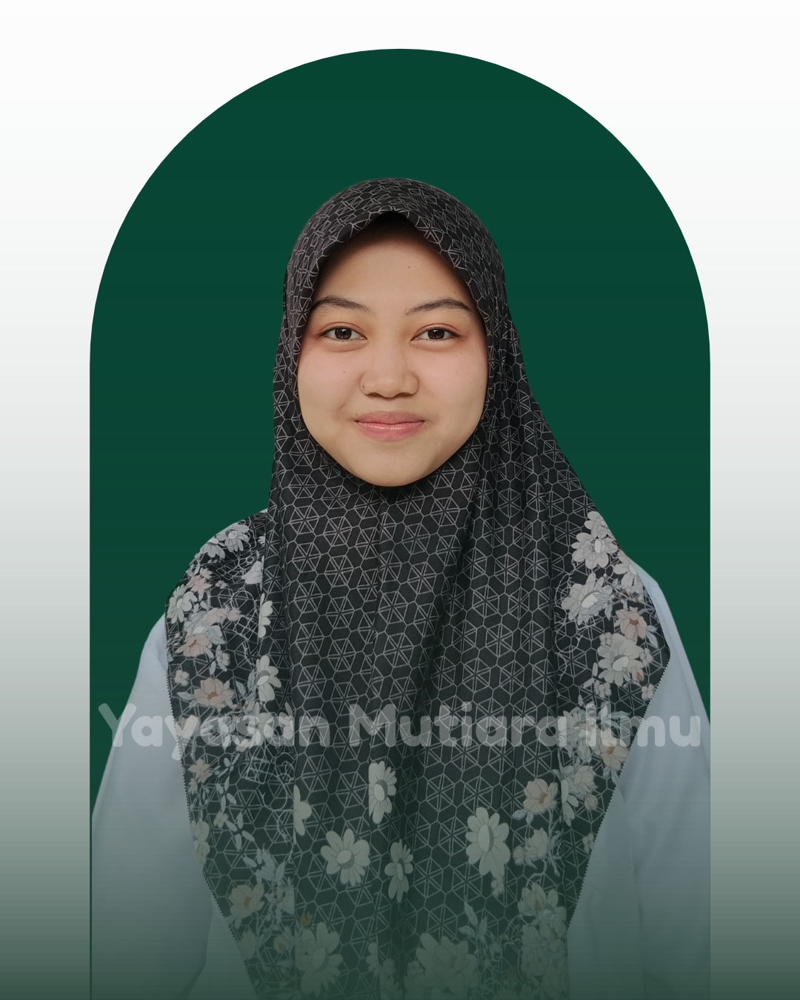

Hilma Nuruzzahra

Sejak tahun 2010 di Kabupaten Bandung, Yayasan Mutiara Ilmu tumbuh bersama masyarakat dalam merawat cahaya ilmu dan kepedulian sosial. Setiap harinya, semangat belajar anak-anak menggema di RA Tarbiyatul Qur’an pada pagi hari dan DTA Tarbiyatul Qur’an pada sore hari, disusul dengan hangatnya majelis ilmu ibu-ibu setiap Sabtu di Masjid Az-Zahir. Tak hanya fokus pada pendidikan, kami juga rutin berbagi kebahagiaan melalui santunan anak yatim dan syiar PHBI. Untuk menjaga keberlanjutan seluruh program kebaikan ini, yayasan turut mengelola usaha hasil tani sebagai pilar kemandirian ekonomi umat.
Terwujudnya insan Qur'ani yang beriman, bertakwa, berakhlakul karimah, cerdas, mandiri, kreatif, serta memiliki karakter Islami sejak usia dini.
Hilma Nuruzzahra

Iis Rosmawati

Kusdinan Abdul Hafidz

Mina Nurlelah

Mushofi

Nurhayat Lestari